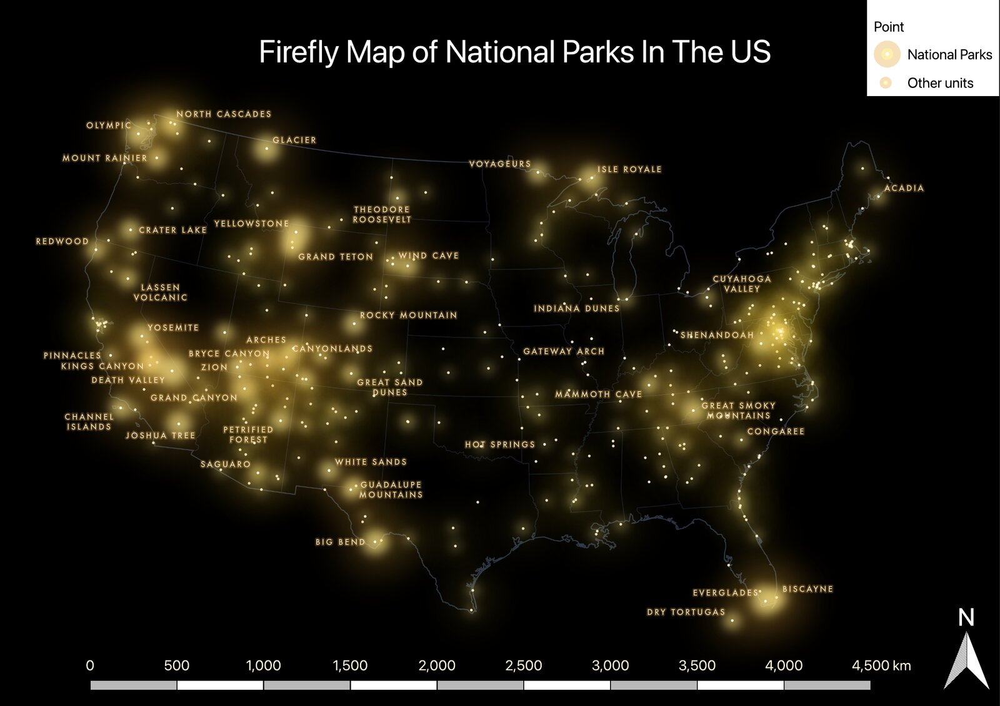

Project 3
Firefly Map of US National Parks
A firefly-style cartographic map of National Park Service sites across the contiguous United States, made in QGIS to show where the national parks and other park units are located.

Approach
I separated the national parks from the rest of the National Park Service units and used a firefly style, with glowing point symbols on a dark basemap with faint state boundaries. National parks get larger, brighter glows and labels, and the other units are drawn as small points so they add context without crowding the map.
Results
The map shows that most national parks are in the West, especially in California, Utah and the Rockies. Other park units are much denser in the East, with the brightest concentration around Washington, D.C. and the mid-Atlantic.